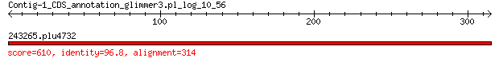

bitscore colors: <40, 40-50 , 50-80, 80-200, >200
 BLASTP 2.2.31+
Reference: Stephen F. Altschul, Thomas L. Madden, Alejandro A.
Schaffer, Jinghui Zhang, Zheng Zhang, Webb Miller, and David J.
Lipman (1997), "Gapped BLAST and PSI-BLAST: a new generation of
protein database search programs", Nucleic Acids Res. 25:3389-3402.
Reference for composition-based statistics: Alejandro A. Schaffer,
L. Aravind, Thomas L. Madden, Sergei Shavirin, John L. Spouge, Yuri
I. Wolf, Eugene V. Koonin, and Stephen F. Altschul (2001),
"Improving the accuracy of PSI-BLAST protein database searches with
composition-based statistics and other refinements", Nucleic Acids
Res. 29:2994-3005.
Database: eggnogv4.proteins.all.fa
14,875,530 sequences; 5,112,597,290 total letters
Query= Contig-1_CDS_annotation_glimmer3.pl_log_10_56
Length=314
Score E
Sequences producing significant alignments: (Bits) Value
243265.plu4732 610 0.0
> 243265.plu4732
Length=319
Score = 610 bits (1574), Expect = 0.0, Method: Compositional matrix adjust.
Identities = 304/314 (97%), Positives = 308/314 (98%), Gaps = 0/314 (0%)
Query 1 VPLQLIKILSDGDVHSGQQLGQDLGMSRAGINKHIQTIREWGIELETTPGKGYSLVEPMQ 60
VPLQLIKILSDG+VHSGQQLGQ LGMSRAGINKHIQTIREWGIELETT GKGYSL+ PMQ
Sbjct 6 VPLQLIKILSDGEVHSGQQLGQYLGMSRAGINKHIQTIREWGIELETTLGKGYSLMAPMQ 65
Query 61 LLDESTIFQYLPQDRITVLPVIDSTNQYLLERLSELKSGDACVAEYQYAGRGRRGRKWVS 120
LLDESTI QYLPQDRITVLPVIDSTNQYLLERLSELKSGDACVAEYQYAGRGRRGRKWVS
Sbjct 66 LLDESTILQYLPQDRITVLPVIDSTNQYLLERLSELKSGDACVAEYQYAGRGRRGRKWVS 125
Query 121 PFGKNLYLSMYWRLEQGPAAAIGLSLVVGIVIAEVLHRFGADRIRVKWPNDLYLDDKKLA 180
PFGKNLYLSMYWRLEQGPAAAIGLSLVVGIVIAEVLHRFGA RIRVKWPNDLYLDDKKLA
Sbjct 126 PFGKNLYLSMYWRLEQGPAAAIGLSLVVGIVIAEVLHRFGAGRIRVKWPNDLYLDDKKLA 185
Query 181 GILVELIGKTGDAAQVVIGAGINISMDHKDEESINQQWINLLQAGIEVDRNKLAVEIILD 240
GILVELIGKTGDAAQVVIGAGINISMDHKDEE INQQWINLLQAGI+VDRNKLAVEIILD
Sbjct 186 GILVELIGKTGDAAQVVIGAGINISMDHKDEEPINQQWINLLQAGIQVDRNKLAVEIILD 245
Query 241 LRKALIQFENEGLSSFVSRWFELDNFMDRPVKLIIGSQEVYGIARGINQQGALLLDQNGV 300
LRKALIQFEN+GLSSFVSRWFELDNFMDRPVKLIIGSQEVYGIARGINQQGALLLDQNGV
Sbjct 246 LRKALIQFENKGLSSFVSRWFELDNFMDRPVKLIIGSQEVYGIARGINQQGALLLDQNGV 305
Query 301 ITPYIGGEISLRGC 314
ITPYIGGEISLRGC
Sbjct 306 ITPYIGGEISLRGC 319
Lambda K H a alpha
0.320 0.140 0.412 0.792 4.96
Gapped
Lambda K H a alpha sigma
0.267 0.0410 0.140 1.90 42.6 43.6
Effective search space used: 532857258500